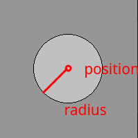
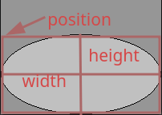

Token: Shapes¶
Shape¶
Base class for shapes
- class miniworldmaker.tokens.shapes.Shape(position=None)[source]¶
Shape is the parent class for various geometric objects that can be created.
Each geometric object has the following properties:
border: The border thickness of the object.
fill: True/False if the object should be filled.
fill_color: The fill color of the object
border_color: The border color of the object.
{kind=link}
Point¶
Circle¶
- class miniworldmaker.tokens.shapes.Circle(position=(0, 0), radius=10)[source]¶
A circular shape, definied by position and radius
- Parameters
position – The position as 2-tuple. The circle is created with its center at the position
radius – The radius of the circle
Examples
Create a circle at center position (200,100) with radius 20:
Circle((200, 100), 20)
Create a circle at topleft position
miniworldmaker.Circle.from_topleft((100,100),50)
- property radius¶
The radius of the circle. If you change the circle-size (e.g. with self.size = (x, y), the radius value will be changed too.
{kind=link}
Ellipse¶
- class miniworldmaker.tokens.shapes.Ellipse(position=(0, 0), width=10, height=10)[source]¶
An elliptic shape.
- Parameters
position – The position as 2-tuple. The ellipse is created at topleft position
width – The width of the ellipse
height – The height of the ellipse
Examples
Create an ellipse at topleft position (200,100) with width 20 and height 30
Ellipse((200, 100), 20, 30)
Create an ellipse at center-position (200,100) width width 10 and height 10
miniworldmaker.Ellipse.from_center((100,100),10, 10)
(Alternative) Create an ellipse at center-position (200,100) with width 10 and height 10
e = miniworldmaker.Ellipse((100,100),10, 10) e.center = e.position
{kind=link}
Line¶
- class miniworldmaker.tokens.shapes.Line(start_position, end_position)[source]¶
A Line-Shape defined by start_position and end_position.
- Parameters
start_position – The start_position as 2-tuple.
end_position – The end_position as 2-tuple.
Examples
Create a line from (200, 100) to (400, 100)
Line((200, 100), (400,100))
Create a line from (200, 100) to (400, 100) with thickness 2
l = Line((200, 100), (400,100)) l.thickness = 2
- property thickness¶
-> see border
Rectangle¶
- class miniworldmaker.tokens.shapes.Rectangle(topleft=(0, 0), width=10, height=10)[source]¶
A rectangular shape defined by position, width and height
- Parameters
topleft – Topleft Position of Rect
height – The height of the rect
width – The width of the rect
Examples
Create a rect with the topleft position (200, 100), the width 20 and the height 10
Rectangle((200, 100), 20, 10)
Polygon¶
- class miniworldmaker.tokens.shapes.Polygon(*args, **kwargs)[source]¶
A Polygon-Shape.
- Parameters
point-list – A list of points
Examples
Example Creation of a polygon
>>> Polygon([(200, 100), (400,100), (0, 0)]) Creates a red polygon with the vertices (200, 100) , (400, 100) and (0, 0)
Example Creation of a filled polygon
>>> Polygon([(200, 100), (400,100), (0, 0)]) Creates a red polygon with the vertices (200, 100) , (400, 100) and (0, 0)